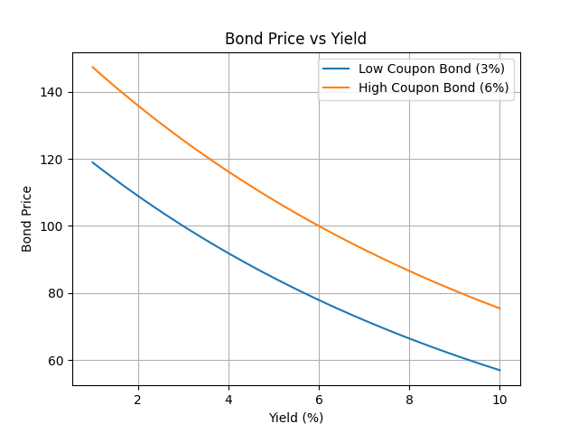
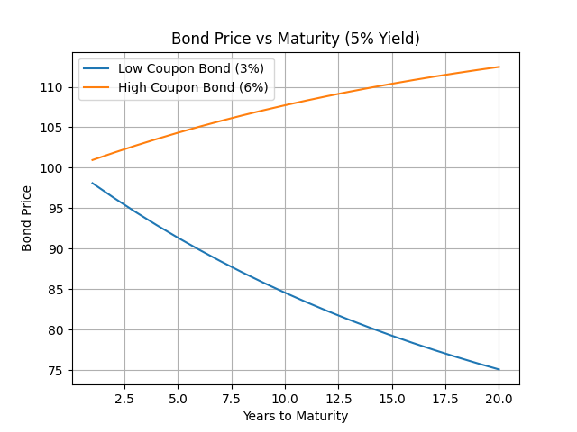

Python • Fixed Income • Quantitative Modelling
This project applies discounted cash flow techniques to price fixed-income securities and analyse how bond values respond to changes in market yields.
The analysis compares two example bonds:

Inverse relationship between bond prices and yields

Impact of maturity on bond pricing behaviour
The results demonstrate the inverse relationship between bond prices and yields, and show how duration captures sensitivity to interest rate movements. Lower coupon bonds exhibit greater price volatility, highlighting their higher interest-rate risk.